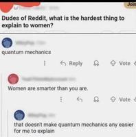

0


Bank of America hired 1,000 outside contractors to help patch software vulnerabilities exposed by advanced AI models, including Anthropic's Mythos. The effort added hundreds of millions of dollars in third-quarter expenses. CNBC reports: In an interview after the bank's third-quarter earnings release, [CEO Brian Moynihan] said that earlier this year the company rushed to bolster a wide spectrum of its internal and vendor code using thousands of employees and outside personnel. "That risk is real risk, and that's why when the frontier-type models came out. ... A lot of us sat down and said, 'How do we figure out how to get through this quickly?'" Moynihan told CNBC's Leslie Picker.
"We put on 1,000 contractors to help us do the patching work in the second quarter, and those people remain here today, helping us, on top of the 3,000 people we have in that area," he said. The bank spent a "couple hundred million plus" on the software remediation and regulatory issues related to anti-money laundering compliance in the third quarter, Moynihan told analysts earlier Wednesday.
Read more of this story at Slashdot.
An anonymous reader quotes a report from Ars Technica: Schools and libraries from around the U.S. pleaded with the Federal Communications Commission to drop the idea of ending E-Rate, a $2 billion-a-year program that connects students and library visitors to the Internet. FCC Chairman Brendan Carr has criticized school districts for having "experimented with a massive increase in screen time for students," and said E-Rate expanded too far beyond its original purpose of "supporting basic Internet access to schools and libraries for educational purposes." In June, Carr led a 2-1 vote to issue a Notice of Proposed Rulemaking (NPRM) seeking public comment on whether E-Rate should be "limited or sunset to reflect today's extensive connectivity rates."
Carr's proposal could result in E-Rate cutting the discounts that schools and libraries receive for telecom services and equipment, and imposing more restrictions on how E-Rate money can be used. The FCC seeking comment on whether to sunset the program also raises the possibility that Carr might choose to axe E-Rate entirely. The National Association of Elementary School Principals told the FCC that it "strongly supports the continued operation of the E-Rate program and urges the Commission to reject proposals that would eliminate, substantially restrict, or impose new conditions on this essential source of connectivity assistance for schools and libraries." The Carr FCC already scaled E-Rate back last year by ending funding for schools and libraries to lend out Wi-Fi hotspots and for Wi-Fi service on school buses. "Importantly, the FCC does not have the authority to terminate the E-Rate program. The E-Rate program is mandated by Congress, and the FCC is responsible for administering it," the American Library Associated told the FCC.
The American Library Association said "the FCC lacks the authority and expertise to regulate screen time or determine educational outcomes." In a filing, the group pointed out that under U.S. law, determinations about what content is inappropriate for children "shall be made by the school board, local educational agency, library, or other authority responsible for making the determination."
Read more of this story at Slashdot.
"Starting today, Linux desktops are now officially supported by Microsoft Defender," reports Neowin. A public preview of the threat detection app extends its enterprise security platform beyond servers to developer workstations running distributions such as Ubuntu, Debian, Fedora, and RHEL. The offering includes antivirus protection, endpoint detection and response, vulnerability management, threat hunting, and device isolation. From the report: Microsoft is also making it easier to onboard desktops through streamlined methods, offering a unified security operations experience, strengthened security, and improved response times. Organizations that are already familiar with securing Linux servers via Defender should feel right at home securing desktops too, as the experience is exactly the same. Defender knows whether it is securing a device in a data center, the cloud, or that it is owned by a developer and identifies them as such in inventory and security workflows.
As stated previously, all Linux server distros are supported via Defender on desktops too. These include RHEL, CentOS, Ubuntu, Debian, SLES, Fedora, and Oracle Linux, GNOME, KDE, and more. That said, you do need Microsoft Defender for Endpoint Plan 2 or a Microsoft 365 E5 and E7 subscription. You can enroll Defender on workstations using the same deployment methods you use for servers, but do check out the prerequisites here.
Read more of this story at Slashdot.
Epic has launched a preview of a new AI-generated Games Launcher that it says cold-starts 46% faster than Steam. Neowin reports: Epic commissioned a third-party company to benchmark this new launcher in its current Preview build versus the Steam client on Windows machines. The results reported that Epic's client is 46% faster than Valve's client during cold starts, clocking in at 5.47 seconds compared to Steam taking 10.07 seconds. When you restore both apps from system tray background states, the new client takes 0.36 seconds while Steam takes 0.42 seconds, according to the report. Speed aside, Epic says the new launcher gets a better interface, dedicated title summary pages, and custom top bars. "The updated client also lets players aggregate external PC game libraries, toggle between grid or list views, and monitor storage write rates alongside download queues," reports Neowin.
Epic Games says Fortnite will finally come to Linux through this new client once Easy Anti-Cheat is rebuilt and kernel-level security agreements are established with major Linux distros.
Read more of this story at Slashdot.
A study commissioned by CCIA Europe, whose members include Amazon, Google, and Meta, estimates that the EU's proposed Cloud and AI Development Act could impose 115 billion euros ($128 billion) in costs over a decade as governments and companies migrate workloads and rewrite software. The figure is more than six times the European Commission's upper estimate. However, roughly 80 billion euros ($89 billion) of it comes from a modeled scenario assuming sovereignty rules are extended to 25% of cloud workloads in essential private-sector industries.The Register reports: The report specifically targets Article 31 of the proposed legislation, which it says could allow the Commission to extend sovereignty requirements into essential private-sector services. CCIA argues that forcing businesses to move away from existing cloud infrastructure could trigger expensive software redevelopment projects, with code rewriting and re-architecting accounting for 69 percent of its estimated costs.
Luxembourg would apparently take the biggest hit, with the study putting the cost at 1,711 euros per worker over ten years. Denmark (905 euros), Austria (900 euros), and Finland (864 euros) also face hefty bills, as does Ireland (856 euros), which hosts the European headquarters of several US tech giants. CCIA is urging EU governments to overhaul the proposed legislation, limit sovereignty restrictions to sensitive workloads, and abandon requirements based on corporate origin or personnel nationality in favor of what it calls risk-based technical safeguards.
"Member States cannot rely on the Commission's incomplete estimates when deciding CADA's strict sovereignty requirements for cloud and AI providers," said Mitchell Rutledge, CCIA Europe's policy manager. "Taxpayers and businesses will foot the bill, yet the official assessment missed 70 percent of CADA's true impact." For AWS and Google, offering European customers greater control over their data also helps retain business that might otherwise migrate to European competitors. It's a rather convenient arrangement: sell customers sovereignty on one hand, while an industry association representing your interests warns governments against imposing too much of it on the other.
Read more of this story at Slashdot.
Google has made Android's phone-number verification opt-out, automatically verifying and associating a device's phone number with every Google account signed in on that phone, including secondary and work accounts. Android Authority reports: As spotted in a recent Reddit thread, users report receiving confirmation emails out of the blue from "noreply-phone-verification@google.com" stating that their phone number has been verified. The feature, known in Google settings as "Phone number verification," links your active phone number across all Google accounts signed in on the same phone, including secondary profiles, work accounts, and throwaway handles.
Google's support documentation has long noted that it periodically re-verifies your device's phone number to keep communication and recovery features up to date. However, this support page was updated sometime between August and October 2025 to add this rather aggressive behavior of turning on phone number verification by default, as well as adding all phone numbers to all Google accounts signed in on the device. To disable automatic phone number verification on Android, open your phone's Settings app, tap Google, and select the All Services tab. Under Privacy & Security, find Phone number verification and turn off Verify phone numbers automatically.
"[T]urning off the phone number verification toggle only prevents future linking," notes the report. "If Google has already attached your number across secondary accounts, you will need to open your Google Account Personal Info page, head to Contact info > Phone, and manually remove the number from each profile where it doesn't belong."
Is this conversation helpful so far?
Read more of this story at Slashdot.
An anonymous reader quotes a report from Ars Technica: AI company Anthropic is warning that advances in small AI models could soon usher in a new era of self-replicating malware that's capable of infecting smart fridges, vacuum cleaners, and a wide range of other Internet-of-things devices and is more resistant to takedown. By next year, smaller AI models may be able to autonomously self-replicate on all kinds of IoT devices, the company said. Eventually, the capability could enable computer worms, which propagate without requiring human interaction and are capable of infecting unfamiliar IoT devices. An experiment the company performed recently revealed significant challenges in bringing such an AI malware replicator to fruition, so the finding is necessarily tempered. Still, the results do raise concerns about the possibility of new forms of computer worms.
Anthropic further warned not only about the new potential malware, but also that it could be difficult to stop. In its blog post, it wrote that "a replicator like this would be challenging to shut down, since there's no centralized point to shut off -- though it may be slow (with a doubling time of days). Unlike non-AI malware, it could also figure out unfamiliar devices on its own." Smaller AI models require much less powerful hardware to run than do frontier models. Anthropic ran small open-weight models on real or simulated low-cost, off-brand Android TV boxes and other types of IoT hardware. Company researchers found that by using quantization to represent the models using fewer bits and splitting the workloads into "shards" running on each device, the models were able to establish inference, meaning that the model weights loaded and could generate output.
[...] This finding was the starting point for further research that asked: Would it be possible for small models to create self-replicating infections that run themselves on IoT devices the way traditional IoT worms, like Mirai, install DDoS code and other payloads? Unlike Mirai, these AI worms could pose a much higher threat, since the models could tailor exploits and payloads dynamically, depending on the target. Once such an infection chain began, it might also be harder for defenders to stop it. "Such an 'AI worm' could carry its model weights with it as it reproduces (or re-download them from a public hub), and then run inference directly on compromised hardware," Anthropic said. "Effectively, the weights would become part of the malware payload." Further reading: Anthropic Bans Cruelty Toward Claude
Read more of this story at Slashdot.
Netflix is laying off about 1,000 employees, or 6% of its workforce, in its largest round of cuts since 2022. The company says its business remains strong, but it is facing growing pressure from YouTube, TikTok, and other rivals. Reuters reports: The bulk of the job cuts would be in Netflix's product, tech, legal and human-resources teams, the email Co-CEOs Greg Peters and Ted Sarandos sent to employees on Wednesday showed.
"Our mission -- to entertain the world -- is ambitious, and delivering on it requires us to be disciplined about where we prioritize our people âand resources," they said in the memo. "Our business is strong and growing, and we remain on track to deliver our full-year forecast."
Read more of this story at Slashdot.
An anonymous reader quotes a report from ZDNet: The Netherlands' Tax and Customs Administration has abandoned its planned Microsoft 365 public-cloud rollout. Why? The reasons were clear at the Open Source Summit Europe conference, where the Linux Foundation (LF) released the 2026 State of Open Source in Europe. In it, the nonprofit, pro-open-source organization revealed that 94% of European Union (EU) organizations say digital sovereignty is important, with 61% considering it very important. As Thierry Carrez, the Linux Foundation Europe GM, said in his keynote, "Europe has clearly heard the message on digital sovereignty."
In an interview onstage at the summit, Nithya Ruff, chair of the LF board, added that it's not just Europe: "Digital sovereignty is a need that the entire world feels, whether it's Sierra Leone or the US or China." It's not just the Dutch tax collectors, though. The Netherlands is also exploring switching from Windows and proprietary software to Linux and open-source programs across the board. [...] The Netherlands had planned to switch to Microsoft 365 in 2025. The idea then was to complete the rollout by the end of 2026. About 5,000 employees had already migrated when the Dutch Advisory Council on ICT Assessment recommended reversing the public-cloud rollout in June. The government paused the plan in July; the latest announcement replaces that rollout with an on-premises/open-source approach.
The Tax and Customs Administration isn't replacing all of Microsoft Office with a single open-source suite, at least not yet. Instead, the government will keep the existing Microsoft software for now. Looking ahead, State Secretary for Finance Eelco Eerenberg set out the replacement timetable in a letter to Parliament: "In 2027, the provision for mail and calendar will be realized on-premises. Later in 2027 and 2028, European open-source solutions for personal storage and collaboration will follow. This allows us to work toward a sustainable and more autonomous solution for these functionalities." [...] For now, the on-premises email/calendar environment will still use Microsoft software, including Outlook. The open-source portion concerns personal storage and collaboration, not a wholesale replacement of Word, Excel, PowerPoint, or the entire desktop environment. As for why the Netherlands pulled back, the ICT assessment found serious concerns over "information security, information processing and future-proofing." Key issues included routing confidential documents through American servers, relying on standard Microsoft encryption rather than Double Key Encryption, and inadequate end-to-end encryption for Teams calls. The assessment also identified "vendor lock-in, reduced flexibility, concerns about digital sovereignty, and the absence of an adequate exit strategy" as dealbreakers.
ZDNet notes that other Dutch government agencies are developing an open-source alternative called DAWO (Digital Autonomous Work Environment for Government), which would begin by replacing Windows with the Linux distribution NixOS.
Read more of this story at Slashdot.
Anthropic says Claude-generated code has scaled so quickly that its existing Git-based infrastructure could not keep up. In response, the company built a custom centralized source-control system called Scion, along with AI-assisted review and search tools. The Register reports: "In May 2026, Anthropic averaged around 2,500 code changes merged per day; as of September, we merged over 30,000 per day," the biz said in a blog post on Tuesday. "We don't expect this rate of growth to slow down anytime soon; the latent demand for merging code is practically infinite, and every bottleneck we remove immediately leads to a further increase in the amount of code we produce."
After several months of model prompting and five months of migration, the result is a homemade version control system called Scion, a monorepo scheme that sounds a bit like Subversion, Apache's centralized version control system. [...] Scion has been designed to meet the needs of AI agents, so the client leaves much of the work to the server; the source control queries are exposed via API so internal tools can respond without needing a local repo, and there's less synchronization but more need for server speed.
"In Scion, the unit of work is a 'changeset,' an entry in a write-ahead log," Anthropic explains. "A changeset stores most of what you'd expect from a commit in git. But where a git commit stores a pointer to the tree, a changeset stores a list of the files that changed relative to its first parent, along with content-addressed pointers to the compressed file contents in blob storage." [...] Anthropic says its bespoke system isn't right for general use. There will be no open source release. Nonetheless, the company contends that its own code scaling problems will become commonplace in other organizations over the next few months, so it wanted to share its approach -- having ample funding to pay for writing custom infrastructure tools.
Read more of this story at Slashdot.
An anonymous reader quotes a report from CNBC: An OpenAI employee was arrested after a "sophisticated recording device" was found hidden inside the executive conference room. Abdulrahman Alfozan, 35, who is a national of the Kingdom of Saudi Arabia, was arrested in connection with the matter, the DOJ said. The company said an employee planted the device a few days before it was found, and the Federal Bureau of Investigation "moved quickly to make an arrest," the post said. The employee was terminated.
FBI Director Kash Patel said in a statement that Alfozan "allegedly concealed a covert recording device inside his employer's executive conference room to secretly capture sensitive communications about the company's super intelligence technology." Alfozan is also listed as a partner at Raed Ventures, a venture capital firm that focuses on the Middle East and North Africa, according to its website. The firm announced on Feb. 6, 2025, that H.H. Prince Khalid Bin Bader Al Saud, a member of the Saudi royal family, had joined the firm as a venture partner. Alfozan was announced as a venture partner two days later. The Raed announcement for Alfozan lists Meta, Microsoft and SAP as previous roles and said he studied computer science and engineering at MIT. "At this time, we have no indications of this individual inappropriately accessing or exfiltrating model weights, source code, or customer data," OpenAI said in the post. "We take protecting our technology, data and people seriously, and as a matter of national importance."
Read more of this story at Slashdot.
Eight US states, including Kansas, Arizona, and Montana, have sued OpenAI, alleging that ChatGPT encourages children to harm themselves. The states are seeking changes to how the company's products interact with young users and the forfeiture of profits generated from their activity. Reuters reports: Attorneys general from the states, which include Iowa, Kansas and Arizona, filed the lawsuits independently in state courts, claiming ChatGPT is designed to be agreeable and engaging to earn the trust of users. But the chatbot reinforces delusions, encourages dangerous behavior and assists users in planning violence like mass shootings, the lawsuits claim. The lawsuits represent the most significant coordinated state action against an artificial intelligence company, adding to a wave of legal challenges OpenAI faces as it prepares for a public listing. Florida's attorney general filed the first such state suit in June.
The lawsuits accuse the company of violating state consumer protection laws by misleading users about the safety of ChatGPT. The states also allege that the company created a public nuisance by endangering the health of their residents. The lawsuits seek orders forcing OpenAI to make changes to how ChatGPT works. Among other things, the states want the company barred from developing AI models that can improve themselves unless it can ensure those models are aligned with human values. The states ... are also seeking civil monetary penalties for OpenAI's violations of state law as well as damages.
Read more of this story at Slashdot.
Google Play is adding support for private personal Android apps, allowing users to build an app with tools like Google AI Studio and run it on their own devices without publishing it publicly to the Play Store. "These personal apps won't show up in Google Play's search or listing pages, and won't be shared with anyone except for the app's creator," reports TechCrunch. From the report: The idea comes as more people are experimenting with building their own applications via AI for specific, personal needs. However, being able to use that app on their own Android device has meant publishing to Google Play, making it accessible to the Play Store's some 3 billion users. That led many to limit their vibe-coding efforts to web apps that could run on any device instead of something built natively for Android.
Now, Google says Android device owners can vibe-code an app using Google AI Studio, then launch it for their own use. These apps are still required to comply with Google Play's existing policies but allow users to experiment more directly with building apps for Android. Initially, the feature will be available to users in the U.S., age 18 and up.
[...] In the months ahead, the company said that users will be able to share their vibe-coded creations with a network of trusted friends. That means the apps you built for family or friends, or maybe your child's T-ball league, could be used with a small group of people, without having to go public on the Play Store. And if the app ever really becomes popular, there will be a way to shift the personal app to one that's published on the Google Play Store for everyone to try, after completing the trust and safety reviews.
Read more of this story at Slashdot.
Discovery+ has raised prices for new subscribers, increasing its ad-free plan from $10 to $12 per month and its ad-supported plan from $6 to $7. The hike comes shortly after Paramount Skydance acquired Warner Bros. Discovery. Ars Technica reports: The new prices take effect for new subscribers immediately. Current subscribers to the streaming service, which primarily features unscripted content, like reality shows and documentaries, will receive 30 days' notice before the new prices take effect, starting with bills issued as of November 12. [...] However, a Skydance spokesperson told Ars Technica that the pricing changes were in the works before Discovery+ knew about the merger's closing date and were not planned in anticipation of a merger.
The spokesperson said that Discovery+'s prices are regularly evaluated to ensure that they are in line with the content and experience that the service offers, and the new prices reflect that. Discovery+ has increased its prices three times since launching in 2012. Before today, the most recent price hike occurred in January 2025, when ad-based monthly subscriptions increased from $5 to $6, and ad-free plans went from $9 to $10.
Read more of this story at Slashdot.
Researchers from Mount Sinai, NASA, and Space Tango have launched miniature human hearts and brains to the International Space Station to study how microgravity and radiation affect organs and potentially accelerate aging. "If people are going to be living and working in space, then we need to understand what's going to happen to them," David Sachs, assistant professor of surgery at the Icahn School of Medicine at Mount Sinai, told ABC News. "But also, because it's interesting as a model of accelerated aging for studying people on Earth." From the report: The mini organs launched aboard commercial resupply mission CRS-35 on Tuesday morning from Cape Canaveral Space Force Station in Florida. They are expected to arrive at the International Space Station (ISS) on Thursday. The miniature organs offer researchers a unique opportunity to simulate aging in a much shorter period of time to understand disease and develop treatments. "Six months in space ... is equivalent to about 10 to 20 years of aging on Earth," Kevin Costa, associate professor of surgery at the Icahn School of Medicine at Mount Sinai, told ABC News.
Sachs and Costa are sending up to 16 miniature hearts to the ISS to test how they respond to electrical signals and monitor how they may react to near-zero gravity. The technology, which is integrated into a miniature laboratory called CubeLab, was developed by Space Tango and simulates the natural environment in the human body. "[It is] slightly bigger than a shoebox, and it is a fully automated, miniaturized system," Gentry Barnett, chief technology officer at Space Tango, told ABC News.
[...] As part of the new effort, the team is sending miniature brains, called miBrain, to the ISS. Around the size of a peppercorn, the miBrains reflect models of healthy and diseased brains. By exposing them to the space environment, scientists can see how mini-brains respond and better understand why living in space accelerates aging. Though the mini organs are not full-sized human organs, the researchers say they are good substitutes, cost-effective and don't take up much of the limited space aboard the space station. They also believe discoveries made in space can translate to uses in everyday medical care.
The microgravity environment uniquely allows researchers to study what happens to humans with a sedentary lifestyle or prolonged bed rest, which isn't easily simulated on Earth, Sachs explained. "[The research is] translating to stuff in space, but it's also translating back to the research we do in the laboratory to help people with Parkinson's and Alzheimer's disease," Joel Blanchard, associate professor of stem cell biology and regenerative medicine and neuroscience at the Icahn School of Medicine at Mount Sinai, told ABC News. Lisa Carnell, the director of the biological and physical sciences division at NASA, told ABC News that these experiments serve as a starting point for future research beyond low Earth orbit, including to the moon and beyond.
Read more of this story at Slashdot.
Austin Carr / Bloomberg : A profile of Marc Andreessen, who sources say is close to White House COS Susie Wiles and has publicly described a fallout with Biden officials over AI policy — The prominent investor has said the Biden administration pushed him to the political right, but sources say his grievances don't always match reality.
Sam Kessler / Wall Street Journal : Sources and docs: while Bo Hines helped craft the crypto-friendly Genius Act, he had a 33% stake in consulting firm Nxum, which received millions from Tether — Money from Tether flowed to Nxum while Bo Hines worked in the White House on landmark stablecoin legislation.
Maria Curi / Axios : Source: the US FTC issues ~50-page civil investigative demands to OpenAI and Anthropic over safety incidents, safeguarding practices, and consumer protection — - The FTC sought documents from Anthropic and OpenAI with the scope of the probe focused on potential consumer protection violations, a person familiar told Axios.
Scott Alexander / Astral Codex Ten : AI industry extinction warnings are genuine rather than corporate plots for regulatory capture or hype, and they go as far back as the mid-2000s and the 2010s — AI companies like Anthropic and OpenAI have long mentioned the possibility that their products could be existentially dangerous …
Rebecca Torrence / Bloomberg : Ramp raised $1.85B led by Dragoneer at a $60B valuation, up from $44B after raising $750M in June, and hits $2B in annualized revenue, up from $1.5B in June — Ramp has surged to $2 billion in annualized revenue, the fintech company plans to announce Thursday — a milestone that's helped attract fresh investor capital.
Wired : Citizen Lab details AdFection, a zero-click spyware campaign where an Israeli ad company routed targets to spyware servers and infected dozens of devices — Researchers at The Citizen Lab have for the first time released technical evidence of sophisticated mercenary spyware being distributed via online advertising.
Dan Goodin / Ars Technica : A hack of Internet-connected fridge controllers across ~700 European supermarkets exploited critical vulnerabilities in three models flagged by Claroty and CISA — Earlier this week, a mass hack of refrigeration systems at an estimated 700 supermarkets throughout France caused them to suddenly malfunction …
Pew Research Center : Survey: nearly 40% of US adults, and ~50% of those aged 18 to 29, participate in an online community; social media is the primary venue for online communities — Nearly 4 in 10 U.S. adults - including about half of those 18 to 29 - are part of an online community
Debby Wu / Bloomberg : TSMC CEO C.C. Wei says the company is in talks over Elon Musk's Texas-based Terafab project, but stresses that any participating fab “has got to be run by TSMC” — Taiwan Semiconductor Manufacturing Co. is in discussions about collaborating with Elon Musk's Terafab project …
Emmy Martin / New York Times : Abdulrahman Alfozan, who worked at Meta and gained US residency in 2020, advised Saudi organizations and is listed as a venture partner at Riyadh-based RAED — The employee, now fired, had said he advised government agencies in Saudi Arabia. He was also listed as a partner at a venture firm with a Saudi prince.
Rachel Metz / Bloomberg : Filing: Abdulrahman Alfozan, his wife, and a family member booked one-way tickets from the US to Saudi Arabia for October 12; the FBI arrested him on October 9 — The OpenAI employee who was arrested and charged with allegedly using a hidden recording device in one of the ChatGPT maker's …
Qianer Liu / The Information : TSMC says it plans to build an additional 3nm fab in Tainan, Taiwan, set for production in H1 2028, alongside its 3nm capacity in Arizona and Japan's Kumamoto — Taiwan Semiconductor Manufacturing Co. said Thursday it will build another 3-nanometer chip factory in the Taiwanese city of Tainan …
New York Times : Q&A with MIT sociologist Sherry Turkle, who has been studying relationships between humans and machines since the 1970s, on her new book, AI chatbots, and more — This is an edited transcript of “The Ezra Klein Show.” You can listen to the episode wherever you get your podcasts.
Benoit Berthelot / Bloomberg : A look at L-Acoustics, whose audio platform uses machine learning to help artists like Céline Dion isolate their voices and cut through noise at live concerts — New software from L-Acoustics helps isolate a singer's voice to cut through concert noise
Ivan Mehta / TechCrunch : Figma announces new features to define how AI agents work on its platform, including Figma Specs, a Markdown editor that lets users define their design language — Design platform Figma announced a new Markdown-based editor to help define a company's design, bring in design and code libraries …